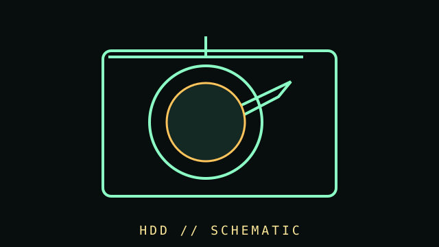

[ COMPONENT RECORD // MAGNETIC DISK ]
Hard disk
drives.
A hard disk drive stores data magnetically on rotating platters, with actuator heads moving over the surface. Mechanical HDDs remain common for high-capacity bulk and archival storage.

CLASS RECORD: ATA/SATA desktop and mobile HDDs; enterprise SAS drives and legacy IDE/parallel ATA models are also part of the hardware family.
Reference specifications
| Form factors | 3.5-inch desktop and 2.5-inch mobile drives are common; the label refers to device class, not platter diameter or exact installed height. |
|---|---|
| Interfaces | SATA is common in consumer PCs; SAS is common in servers and requires a compatible SAS controller. Older drives may use IDE/PATA or SCSI. |
| Mechanics | Capacity, sector format (512n/512e/4Kn), rotational speed, cache, workload rating, recording method, and acoustic behavior vary by model. |
| Health | SMART attributes and self-tests can reveal warning signs but cannot guarantee future reliability. Maintain separate verified backups. |
Identification & preservation
- Record exact model, serial number, firmware, interface, sector size, power requirements, and date placed in service.
- Use a stable mounting position and follow the manufacturer's shock, vibration, temperature, and power-cycle guidance.
- Clicking, repeated spin-up, disappearing devices, or read errors warrant stopping unnecessary use and prioritizing a safe clone or professional recovery.
- Do not open a drive outside an appropriate clean environment; dust can damage platter surfaces.
- For long-term archives, verify checksums periodically and keep geographically or physically separate copies on different media.
Sources & further reading
- INCITS T13 — ATA/ATAPI standards committeePrimary standards work for ATA storage interfaces.
- SATA-IO — SATA specificationsInterface specifications and ecosystem references.
- Seagate Support — Drive health and troubleshootingManufacturer guidance; follow the actual drive vendor's tools and model-specific documentation.